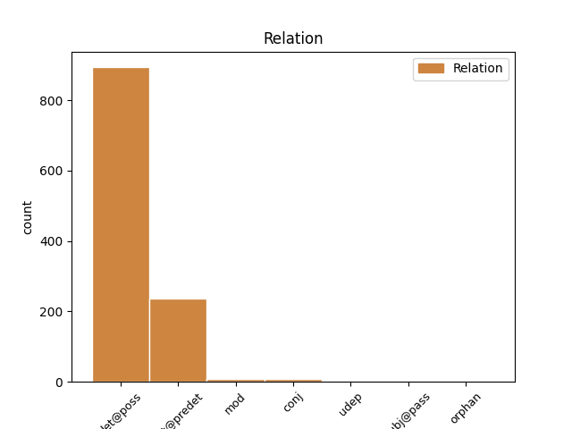
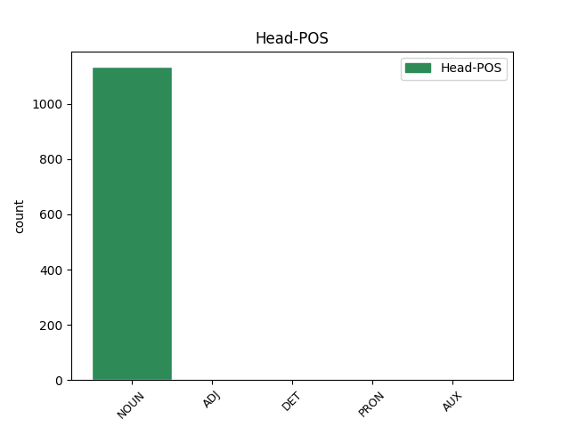
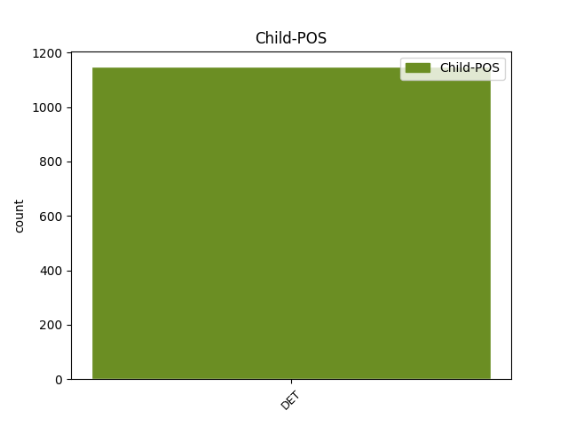

Distribution of features within this leaf



Agreement Rules sorted by frequency.
- When the dependent token is the determiner(det@poss) of the head token, and the head token is NOUN and the dependent token is DET.
1 Sì _ _ _ _ 0 _ _ _
2 , _ _ _ _ 0 _ _ _
3 è _ _ _ _ 0 _ _ _
4 proprio _ _ _ _ 0 _ _ _
5 lei _ _ _ _ 0 _ _ _
6 , _ _ _ _ 0 _ _ _
7 la _ _ _ _ 0 _ _ _
8 Alexanderplatz _ _ _ _ 0 _ _ _
9 che _ _ _ _ 0 _ _ _
10 Doblin _ _ _ _ 0 _ _ _
11 rese _ _ _ _ 0 _ _ _
12 famosa _ _ _ _ 0 _ _ _
13 in _ _ _ _ 0 _ _ _
14 le _ _ _ _ 0 _ _ _
15 sue suo DET AP Gender=Fem|Number=Plur|Poss=Yes|PronType=Prs 16 det@poss _ _
16 pagine pagina NOUN S Gender=Fem|Number=Plur 0 _ _ _
17 , _ _ _ _ 0 _ _ _
18 dedicate _ _ _ _ 0 _ _ _
19 a _ _ _ _ 0 _ _ _
20 la _ _ _ _ 0 _ _ _
21 piccola _ _ _ _ 0 _ _ _
22 gente _ _ _ _ 0 _ _ _
23 come _ _ _ _ 0 _ _ _
24 " _ _ _ _ 0 _ _ _
25 les _ _ _ _ 0 _ _ _
26 enfants _ _ _ _ 0 _ _ _
27 du _ _ _ _ 0 _ _ _
28 paradis _ _ _ _ 0 _ _ _
29 " _ _ _ _ 0 _ _ _
30 di _ _ _ _ 0 _ _ _
31 Carné _ _ _ _ 0 _ _ _
32 , _ _ _ _ 0 _ _ _
33 la _ _ _ _ 0 _ _ _
34 Alexanderplatz _ _ _ _ 0 _ _ _
35 dove _ _ _ _ 0 _ _ _
36 i _ _ _ _ 0 _ _ _
37 cortei _ _ _ _ 0 _ _ _
38 di _ _ _ _ 0 _ _ _
39 l' _ _ _ _ 0 _ _ _
40 89 _ _ _ _ 0 _ _ _
41 segnarono _ _ _ _ 0 _ _ _
42 la _ _ _ _ 0 _ _ _
43 caduta _ _ _ _ 0 _ _ _
44 di _ _ _ _ 0 _ _ _
45 i _ _ _ _ 0 _ _ _
46 successori _ _ _ _ 0 _ _ _
47 di _ _ _ _ 0 _ _ _
48 Honecker _ _ _ _ 0 _ _ _
49 . _ _ _ _ 0 _ _ _
1 In _ _ _ _ 0 _ _ _
2 entrambe entrambi DET T Gender=Masc|Number=Plur|PronType=Ind 4 det@predet _ _
3 le _ _ _ _ 0 _ _ _
4 settimane settimana NOUN S Gender=Fem|Number=Plur 0 _ _ _
5 Susanna _ _ _ _ 0 _ _ _
6 Giaccai _ _ _ _ 0 _ _ _
7 terrà _ _ _ _ 0 _ _ _
8 un _ _ _ _ 0 _ _ _
9 seminario _ _ _ _ 0 _ _ _
10 di _ _ _ _ 0 _ _ _
11 introduzione _ _ _ _ 0 _ _ _
12 a _ _ _ _ 0 _ _ _
13 internet _ _ _ _ 0 _ _ _
14 come _ _ _ _ 0 _ _ _
15 strumento _ _ _ _ 0 _ _ _
16 di _ _ _ _ 0 _ _ _
17 ricerca _ _ _ _ 0 _ _ _
18 e _ _ _ _ 0 _ _ _
19 di _ _ _ _ 0 _ _ _
20 didattica _ _ _ _ 0 _ _ _
21 per _ _ _ _ 0 _ _ _
22 gli _ _ _ _ 0 _ _ _
23 studi _ _ _ _ 0 _ _ _
24 di _ _ _ _ 0 _ _ _
25 le _ _ _ _ 0 _ _ _
26 donne _ _ _ _ 0 _ _ _
27 . _ _ _ _ 0 _ _ _
1 Quest' questo DET DD Number=Sing|PronType=Dem 2 mod _ SpaceAfter=No
2 anno anno NOUN S Gender=Masc|Number=Sing 0 _ _ _
3 la _ _ _ _ 0 _ _ _
4 stessa _ _ _ _ 0 _ _ _
5 domanda _ _ _ _ 0 _ _ _
6 è _ _ _ _ 0 _ _ _
7 stata _ _ _ _ 0 _ _ _
8 fatta _ _ _ _ 0 _ _ _
9 a _ _ _ _ 0 _ _ _
10 Newt _ _ _ _ 0 _ _ _
11 Gingrich _ _ _ _ 0 _ _ _
12 , _ _ _ _ 0 _ _ _
13 leader _ _ _ _ 0 _ _ _
14 di _ _ _ _ 0 _ _ _
15 la _ _ _ _ 0 _ _ _
16 nuova _ _ _ _ 0 _ _ _
17 destra _ _ _ _ 0 _ _ _
18 Usa _ _ _ _ 0 _ _ _
19 . _ _ _ _ 0 _ _ _
1 Quasi _ _ _ _ 0 _ _ _
2 ogni _ _ _ _ 0 _ _ _
3 giorno _ _ _ _ 0 _ _ _
4 , _ _ _ _ 0 _ _ _
5 una _ _ _ _ 0 _ _ _
6 sortita _ _ _ _ 0 _ _ _
7 di _ _ _ _ 0 _ _ _
8 Bossi _ _ _ _ 0 _ _ _
9 , _ _ _ _ 0 _ _ _
10 uno _ _ _ _ 0 _ _ _
11 scambio _ _ _ _ 0 _ _ _
12 di _ _ _ _ 0 _ _ _
13 bordate _ _ _ _ 0 _ _ _
14 tra _ _ _ _ 0 _ _ _
15 D' _ _ _ _ 0 _ _ _
16 Alema _ _ _ _ 0 _ _ _
17 e _ _ _ _ 0 _ _ _
18 Berlusconi _ _ _ _ 0 _ _ _
19 , _ _ _ _ 0 _ _ _
20 i _ _ _ _ 0 _ _ _
21 colpi _ _ _ _ 0 _ _ _
22 di _ _ _ _ 0 _ _ _
23 la _ _ _ _ 0 _ _ _
24 grancassa _ _ _ _ 0 _ _ _
25 giornalistica _ _ _ _ 0 _ _ _
26 con _ _ _ _ 0 _ _ _
27 cui _ _ _ _ 0 _ _ _
28 veniva _ _ _ _ 0 _ _ _
29 accolto _ _ _ _ 0 _ _ _
30 questo questo DET DD Gender=Masc|Number=Sing|PronType=Dem 0 _ _ _
31 o _ _ _ _ 0 _ _ _
32 quell quello DET DD Number=Sing|PronType=Dem 30 conj _ _
33 avviso _ _ _ _ 0 _ _ _
34 di _ _ _ _ 0 _ _ _
35 garanzia _ _ _ _ 0 _ _ _
36 , _ _ _ _ 0 _ _ _
37 si _ _ _ _ 0 _ _ _
38 trasformavano _ _ _ _ 0 _ _ _
39 in _ _ _ _ 0 _ _ _
40 mazzate _ _ _ _ 0 _ _ _
41 su _ _ _ _ 0 _ _ _
42 la _ _ _ _ 0 _ _ _
43 testa _ _ _ _ 0 _ _ _
44 di _ _ _ _ 0 _ _ _
45 la _ _ _ _ 0 _ _ _
46 lira _ _ _ _ 0 _ _ _
47 . _ _ _ _ 0 _ _ _
1 Bastava _ _ _ _ 0 _ _ _
2 guardar _ _ _ _ 0 _ _ _
3 li _ _ _ _ 0 _ _ _
4 per _ _ _ _ 0 _ _ _
5 far _ _ _ _ 0 _ _ _
6 si _ _ _ _ 0 _ _ _
7 raccontare _ _ _ _ 0 _ _ _
8 la _ _ _ _ 0 _ _ _
9 loro _ _ _ _ 0 _ _ _
10 storia _ _ _ _ 0 _ _ _
11 : _ _ _ _ 0 _ _ _
12 una _ _ _ _ 0 _ _ _
13 grande _ _ _ _ 0 _ _ _
14 Athena _ _ _ _ 0 _ _ _
15 , _ _ _ _ 0 _ _ _
16 due _ _ _ _ 0 _ _ _
17 Afrodite _ _ _ _ 0 _ _ _
18 , _ _ _ _ 0 _ _ _
19 un _ _ _ _ 0 _ _ _
20 ragazzo _ _ _ _ 0 _ _ _
21 sacro _ _ _ _ 0 _ _ _
22 - _ _ _ _ 0 _ _ _
23 il _ _ _ _ 0 _ _ _
24 Kouros _ _ _ _ 0 _ _ _
25 - _ _ _ _ 0 _ _ _
26 e _ _ _ _ 0 _ _ _
27 una _ _ _ _ 0 _ _ _
28 maschera _ _ _ _ 0 _ _ _
29 da _ _ _ _ 0 _ _ _
30 teatro _ _ _ _ 0 _ _ _
31 che _ _ _ _ 0 _ _ _
32 oggi _ _ _ _ 0 _ _ _
33 , _ _ _ _ 0 _ _ _
34 tutti _ _ _ _ 0 _ _ _
35 insieme _ _ _ _ 0 _ _ _
36 , _ _ _ _ 0 _ _ _
37 ben _ _ _ _ 0 _ _ _
38 illuminati illuminato ADJ A Gender=Masc|Number=Plur 0 _ _ _
39 e _ _ _ _ 0 _ _ _
40 un _ _ _ _ 0 _ _ _
41 pò _ _ _ _ 0 _ _ _
42 trascurati trascurato DET AP Gender=Masc|Number=Plur|Poss=Yes|PronType=Prs 38 conj _ _
43 da _ _ _ _ 0 _ _ _
44 il _ _ _ _ 0 _ _ _
45 turismo _ _ _ _ 0 _ _ _
46 vedi _ _ _ _ 0 _ _ _
47 e _ _ _ _ 0 _ _ _
48 fuggi _ _ _ _ 0 _ _ _
49 , _ _ _ _ 0 _ _ _
50 fanno _ _ _ _ 0 _ _ _
51 bello _ _ _ _ 0 _ _ _
52 il _ _ _ _ 0 _ _ _
53 terzo _ _ _ _ 0 _ _ _
54 piano _ _ _ _ 0 _ _ _
55 di _ _ _ _ 0 _ _ _
56 il _ _ _ _ 0 _ _ _
57 museo _ _ _ _ 0 _ _ _
58 di _ _ _ _ 0 _ _ _
59 il _ _ _ _ 0 _ _ _
60 Pireo _ _ _ _ 0 _ _ _
61 . _ _ _ _ 0 _ _ _
1 Benché _ _ _ _ 0 _ _ _
2 io _ _ _ _ 0 _ _ _
3 apprezzi _ _ _ _ 0 _ _ _
4 l' _ _ _ _ 0 _ _ _
5 eleganza _ _ _ _ 0 _ _ _
6 in _ _ _ _ 0 _ _ _
7 il _ _ _ _ 0 _ _ _
8 vestire _ _ _ _ 0 _ _ _
9 , _ _ _ _ 0 _ _ _
10 non _ _ _ _ 0 _ _ _
11 bado _ _ _ _ 0 _ _ _
12 , _ _ _ _ 0 _ _ _
13 di _ _ _ _ 0 _ _ _
14 solito _ _ _ _ 0 _ _ _
15 , _ _ _ _ 0 _ _ _
16 a _ _ _ _ 0 _ _ _
17 la _ _ _ _ 0 _ _ _
18 perfezione _ _ _ _ 0 _ _ _
19 o _ _ _ _ 0 _ _ _
20 meno _ _ _ _ 0 _ _ _
21 con _ _ _ _ 0 _ _ _
22 cui _ _ _ _ 0 _ _ _
23 sono _ _ _ _ 0 _ _ _
24 tagliati _ _ _ _ 0 _ _ _
25 gli _ _ _ _ 0 _ _ _
26 abiti _ _ _ _ 0 _ _ _
27 di _ _ _ _ 0 _ _ _
28 i _ _ _ _ 0 _ _ _
29 miei mio DET AP Gender=Masc|Number=Plur|Poss=Yes|PronType=Prs 30 det@poss _ _
30 simili simile ADJ A Number=Plur 0 _ _ _
31 . _ _ _ _ 0 _ _ _
1 Tutto tutto DET DI Gender=Masc|Number=Sing|PronType=Tot 2 det@predet _ _
2 questo questo PRON PD Gender=Masc|Number=Sing|PronType=Dem 0 _ _ _
3 finora _ _ _ _ 0 _ _ _
4 è _ _ _ _ 0 _ _ _
5 mancato _ _ _ _ 0 _ _ _
6 e _ _ _ _ 0 _ _ _
7 - _ _ _ _ 0 _ _ _
8 mescolato _ _ _ _ 0 _ _ _
9 a _ _ _ _ 0 _ _ _
10 la _ _ _ _ 0 _ _ _
11 prudenza _ _ _ _ 0 _ _ _
12 di _ _ _ _ 0 _ _ _
13 gli _ _ _ _ 0 _ _ _
14 editori _ _ _ _ 0 _ _ _
15 in _ _ _ _ 0 _ _ _
16 l' _ _ _ _ 0 _ _ _
17 investire _ _ _ _ 0 _ _ _
18 in _ _ _ _ 0 _ _ _
19 questa _ _ _ _ 0 _ _ _
20 nuova _ _ _ _ 0 _ _ _
21 editoria _ _ _ _ 0 _ _ _
22 - _ _ _ _ 0 _ _ _
23 ha _ _ _ _ 0 _ _ _
24 portato _ _ _ _ 0 _ _ _
25 molti _ _ _ _ 0 _ _ _
26 " _ _ _ _ 0 _ _ _
27 nuovi _ _ _ _ 0 _ _ _
28 editori _ _ _ _ 0 _ _ _
29 " _ _ _ _ 0 _ _ _
30 a _ _ _ _ 0 _ _ _
31 scendere _ _ _ _ 0 _ _ _
32 in _ _ _ _ 0 _ _ _
33 campo _ _ _ _ 0 _ _ _
34 per _ _ _ _ 0 _ _ _
35 fare _ _ _ _ 0 _ _ _
36 il _ _ _ _ 0 _ _ _
37 nostro _ _ _ _ 0 _ _ _
38 mestiere _ _ _ _ 0 _ _ _
39 . _ _ _ _ 0 _ _ _
1 A _ _ _ _ 0 _ _ _
2 il _ _ _ _ 0 _ _ _
3 London _ _ _ _ 0 _ _ _
4 Metal _ _ _ _ 0 _ _ _
5 tutti tutto DET DI Gender=Masc|Number=Plur|PronType=Ind 9 det@predet _ _
6 i _ _ _ _ 0 _ _ _
7 non _ _ _ _ 0 _ _ _
8 ferrosi _ _ _ _ 0 _ _ _
9 industriali industriale ADJ A Number=Plur 0 _ _ _
10 hanno _ _ _ _ 0 _ _ _
11 registrato _ _ _ _ 0 _ _ _
12 settlement _ _ _ _ 0 _ _ _
13 in _ _ _ _ 0 _ _ _
14 rialzo _ _ _ _ 0 _ _ _
15 , _ _ _ _ 0 _ _ _
16 guidati _ _ _ _ 0 _ _ _
17 da _ _ _ _ 0 _ _ _
18 il _ _ _ _ 0 _ _ _
19 rame _ _ _ _ 0 _ _ _
20 che _ _ _ _ 0 _ _ _
21 continua _ _ _ _ 0 _ _ _
22 a _ _ _ _ 0 _ _ _
23 attirare _ _ _ _ 0 _ _ _
24 l' _ _ _ _ 0 _ _ _
25 interesse _ _ _ _ 0 _ _ _
26 di _ _ _ _ 0 _ _ _
27 la _ _ _ _ 0 _ _ _
28 speculazione _ _ _ _ 0 _ _ _
29 . _ _ _ _ 0 _ _ _
1 Su _ _ _ _ 0 _ _ _
2 il _ _ _ _ 0 _ _ _
3 taccuino _ _ _ _ 0 _ _ _
4 ho _ _ _ _ 0 _ _ _
5 calcolato _ _ _ _ 0 _ _ _
6 che _ _ _ _ 0 _ _ _
7 , _ _ _ _ 0 _ _ _
8 se _ _ _ _ 0 _ _ _
9 tutto _ _ _ _ 0 _ _ _
10 andrà _ _ _ _ 0 _ _ _
11 bene _ _ _ _ 0 _ _ _
12 , _ _ _ _ 0 _ _ _
13 io _ _ _ _ 0 _ _ _
14 continuando _ _ _ _ 0 _ _ _
15 il _ _ _ _ 0 _ _ _
16 cammino _ _ _ _ 0 _ _ _
17 come _ _ _ _ 0 _ _ _
18 ho _ _ _ _ 0 _ _ _
19 fatto _ _ _ _ 0 _ _ _
20 finora _ _ _ _ 0 _ _ _
21 e _ _ _ _ 0 _ _ _
22 lui lui PRON PE Gender=Masc|Number=Sing|Person=3|PronType=Prs 0 _ _ _
23 il _ _ _ _ 0 _ _ _
24 suo suo DET AP Gender=Masc|Number=Sing|Poss=Yes|PronType=Prs 22 orphan _ SpaceAfter=No
25 , _ _ _ _ 0 _ _ _
26 non _ _ _ _ 0 _ _ _
27 potrò _ _ _ _ 0 _ _ _
28 rivedere _ _ _ _ 0 _ _ _
29 Domenico _ _ _ _ 0 _ _ _
30 che _ _ _ _ 0 _ _ _
31 fra _ _ _ _ 0 _ _ _
32 trentaquattro _ _ _ _ 0 _ _ _
33 anni _ _ _ _ 0 _ _ _
34 . _ _ _ _ 0 _ _ _
1 Janet _ _ _ _ 0 _ _ _
2 Leigh _ _ _ _ 0 _ _ _
3 , _ _ _ _ 0 _ _ _
4 che _ _ _ _ 0 _ _ _
5 si _ _ _ _ 0 _ _ _
6 confessa _ _ _ _ 0 _ _ _
7 dotata _ _ _ _ 0 _ _ _
8 a _ _ _ _ 0 _ _ _
9 quel _ _ _ _ 0 _ _ _
10 tempo _ _ _ _ 0 _ _ _
11 di _ _ _ _ 0 _ _ _
12 " _ _ _ _ 0 _ _ _
13 un _ _ _ _ 0 _ _ _
14 seno _ _ _ _ 0 _ _ _
15 fuori _ _ _ _ 0 _ _ _
16 di _ _ _ _ 0 _ _ _
17 il _ _ _ _ 0 _ _ _
18 comune _ _ _ _ 0 _ _ _
19 " _ _ _ _ 0 _ _ _
20 , _ _ _ _ 0 _ _ _
21 dice _ _ _ _ 0 _ _ _
22 anche _ _ _ _ 0 _ _ _
23 che _ _ _ _ 0 _ _ _
24 " _ _ _ _ 0 _ _ _
25 per _ _ _ _ 0 _ _ _
26 Hitchcock _ _ _ _ 0 _ _ _
27 avrei _ _ _ _ 0 _ _ _
28 fatto _ _ _ _ 0 _ _ _
29 vedere _ _ _ _ 0 _ _ _
30 quello quello PRON PD Gender=Masc|Number=Sing|PronType=Dem 0 _ _ _
31 e _ _ _ _ 0 _ _ _
32 ben _ _ _ _ 0 _ _ _
33 altro altro DET DI Gender=Masc|Number=Sing|PronType=Ind 30 conj _ SpaceAfter=No
34 " _ _ _ _ 0 _ _ _
35 . _ _ _ _ 0 _ _ _
1 È _ _ _ _ 0 _ _ _
2 finita _ _ _ _ 0 _ _ _
3 la _ _ _ _ 0 _ _ _
4 trattativa _ _ _ _ 0 _ _ _
5 tra _ _ _ _ 0 _ _ _
6 comune _ _ _ _ 0 _ _ _
7 e _ _ _ _ 0 _ _ _
8 organizzatori _ _ _ _ 0 _ _ _
9 di _ _ _ _ 0 _ _ _
10 i _ _ _ _ 0 _ _ _
11 concerti _ _ _ _ 0 _ _ _
12 di _ _ _ _ 0 _ _ _
13 Villa _ _ _ _ 0 _ _ _
14 Pamphili _ _ _ _ 0 _ _ _
15 , _ _ _ _ 0 _ _ _
16 alcuni alcuno DET DI Gender=Masc|Number=Plur|PronType=Ind 21 udep _ _
17 di _ _ _ _ 0 _ _ _
18 i _ _ _ _ 0 _ _ _
19 quali _ _ _ _ 0 _ _ _
20 non _ _ _ _ 0 _ _ _
21 verranno venire AUX VA Mood=Ind|Number=Plur|Person=3|Tense=Fut|VerbForm=Fin 0 _ _ _
22 spostati _ _ _ _ 0 _ _ _
23 . _ _ _ _ 0 _ _ _
1 Una uno DET DI Gender=Fem|Number=Sing|PronType=Ind 13 subj@pass _ _
2 delle _ _ _ _ 0 _ _ _
3 Novità _ _ _ _ 0 _ _ _
4 , _ _ _ _ 0 _ _ _
5 in _ _ _ _ 0 _ _ _
6 l' _ _ _ _ 0 _ _ _
7 esordio _ _ _ _ 0 _ _ _
8 di _ _ _ _ 0 _ _ _
9 i _ _ _ _ 0 _ _ _
10 tre _ _ _ _ 0 _ _ _
11 schieramenti _ _ _ _ 0 _ _ _
12 , _ _ _ _ 0 _ _ _
13 è essere AUX VA Mood=Ind|Number=Sing|Person=3|Tense=Pres|VerbForm=Fin 0 _ _ _
14 rappresentata _ _ _ _ 0 _ _ _
15 senz' _ _ _ _ 0 _ _ _
16 altro _ _ _ _ 0 _ _ _
17 da _ _ _ _ 0 _ _ _
18 la _ _ _ _ 0 _ _ _
19 lista _ _ _ _ 0 _ _ _
20 presentata _ _ _ _ 0 _ _ _
21 da _ _ _ _ 0 _ _ _
22 Abn _ _ _ _ 0 _ _ _
23 Amro _ _ _ _ 0 _ _ _
24 e _ _ _ _ 0 _ _ _
25 da _ _ _ _ 0 _ _ _
26 il _ _ _ _ 0 _ _ _
27 gruppo _ _ _ _ 0 _ _ _
28 Fontana _ _ _ _ 0 _ _ _
29 che _ _ _ _ 0 _ _ _
30 hanno _ _ _ _ 0 _ _ _
31 candidato _ _ _ _ 0 _ _ _
32 Ernst _ _ _ _ 0 _ _ _
33 Verloop _ _ _ _ 0 _ _ _
34 e _ _ _ _ 0 _ _ _
35 Giuseppe _ _ _ _ 0 _ _ _
36 Fontana _ _ _ _ 0 _ _ _
37 . _ _ _ _ 0 _ _ _
Disagree Examples:
1 Una _ _ _ _ 0 _ _ _
2 buona _ _ _ _ 0 _ _ _
3 rete _ _ _ _ 0 _ _ _
4 di _ _ _ _ 0 _ _ _
5 infrastrutture _ _ _ _ 0 _ _ _
6 connettive _ _ _ _ 0 _ _ _
7 interne _ _ _ _ 0 _ _ _
8 e _ _ _ _ 0 _ _ _
9 l' _ _ _ _ 0 _ _ _
10 efficienza _ _ _ _ 0 _ _ _
11 di _ _ _ _ 0 _ _ _
12 i _ _ _ _ 0 _ _ _
13 servizi _ _ _ _ 0 _ _ _
14 di _ _ _ _ 0 _ _ _
15 comunicazione _ _ _ _ 0 _ _ _
16 e _ _ _ _ 0 _ _ _
17 di _ _ _ _ 0 _ _ _
18 trasporto _ _ _ _ 0 _ _ _
19 che _ _ _ _ 0 _ _ _
20 su _ _ _ _ 0 _ _ _
21 queste _ _ _ _ 0 _ _ _
22 reti _ _ _ _ 0 _ _ _
23 si _ _ _ _ 0 _ _ _
24 svolgono _ _ _ _ 0 _ _ _
25 assicurano _ _ _ _ 0 _ _ _
26 , _ _ _ _ 0 _ _ _
27 infatti _ _ _ _ 0 _ _ _
28 , _ _ _ _ 0 _ _ _
29 una _ _ _ _ 0 _ _ _
30 migliore _ _ _ _ 0 _ _ _
31 organizzazione _ _ _ _ 0 _ _ _
32 di _ _ _ _ 0 _ _ _
33 le _ _ _ _ 0 _ _ _
34 funzioni _ _ _ _ 0 _ _ _
35 su _ _ _ _ 0 _ _ _
36 il _ _ _ _ 0 _ _ _
37 territorio _ _ _ _ 0 _ _ _
38 e _ _ _ _ 0 _ _ _
39 una _ _ _ _ 0 _ _ _
40 più _ _ _ _ 0 _ _ _
41 efficiente _ _ _ _ 0 _ _ _
42 divisione _ _ _ _ 0 _ _ _
43 spaziale _ _ _ _ 0 _ _ _
44 di _ _ _ _ 0 _ _ _
45 il _ _ _ _ 0 _ _ _
46 lavoro _ _ _ _ 0 _ _ _
47 fra _ _ _ _ 0 _ _ _
48 centri _ _ _ _ 0 _ _ _
49 urbani _ _ _ _ 0 _ _ _
50 ; _ _ _ _ 0 _ _ _
51 l' _ _ _ _ 0 _ _ _
52 efficienza _ _ _ _ 0 _ _ _
53 di _ _ _ _ 0 _ _ _
54 le _ _ _ _ 0 _ _ _
55 interconnessioni _ _ _ _ 0 _ _ _
56 a _ _ _ _ 0 _ _ _
57 rete _ _ _ _ 0 _ _ _
58 con _ _ _ _ 0 _ _ _
59 l' _ _ _ _ 0 _ _ _
60 esterno _ _ _ _ 0 _ _ _
61 , _ _ _ _ 0 _ _ _
62 sia _ _ _ _ 0 _ _ _
63 in _ _ _ _ 0 _ _ _
64 il _ _ _ _ 0 _ _ _
65 senso _ _ _ _ 0 _ _ _
66 strettamente _ _ _ _ 0 _ _ _
67 fisico _ _ _ _ 0 _ _ _
68 di _ _ _ _ 0 _ _ _
69 le _ _ _ _ 0 _ _ _
70 reti _ _ _ _ 0 _ _ _
71 infrastrutturali _ _ _ _ 0 _ _ _
72 di _ _ _ _ 0 _ _ _
73 viabilità _ _ _ _ 0 _ _ _
74 e _ _ _ _ 0 _ _ _
75 trasporto _ _ _ _ 0 _ _ _
76 sia _ _ _ _ 0 _ _ _
77 in _ _ _ _ 0 _ _ _
78 l' _ _ _ _ 0 _ _ _
79 aspetto _ _ _ _ 0 _ _ _
80 economico _ _ _ _ 0 _ _ _
81 , _ _ _ _ 0 _ _ _
82 contribuendo _ _ _ _ 0 _ _ _
83 a _ _ _ _ 0 _ _ _
84 creare _ _ _ _ 0 _ _ _
85 una _ _ _ _ 0 _ _ _
86 rete _ _ _ _ 0 _ _ _
87 urbana _ _ _ _ 0 _ _ _
88 di _ _ _ _ 0 _ _ _
89 complementarietà _ _ _ _ 0 _ _ _
90 costituita _ _ _ _ 0 _ _ _
91 da _ _ _ _ 0 _ _ _
92 più _ _ _ _ 0 _ _ _
93 centri _ _ _ _ 0 _ _ _
94 che _ _ _ _ 0 _ _ _
95 possono _ _ _ _ 0 _ _ _
96 usufruire _ _ _ _ 0 _ _ _
97 di _ _ _ _ 0 _ _ _
98 strutture _ _ _ _ 0 _ _ _
99 e _ _ _ _ 0 _ _ _
100 servizi _ _ _ _ 0 _ _ _
101 ( _ _ _ _ 0 _ _ _
102 fiere _ _ _ _ 0 _ _ _
103 specializzate _ _ _ _ 0 _ _ _
104 , _ _ _ _ 0 _ _ _
105 unità _ _ _ _ 0 _ _ _
106 di _ _ _ _ 0 _ _ _
107 ricerca _ _ _ _ 0 _ _ _
108 , _ _ _ _ 0 _ _ _
109 università _ _ _ _ 0 _ _ _
110 , _ _ _ _ 0 _ _ _
111 centri _ _ _ _ 0 _ _ _
112 di _ _ _ _ 0 _ _ _
113 formazione _ _ _ _ 0 _ _ _
114 ecc _ _ _ _ 0 _ _ _
115 ) _ _ _ _ 0 _ _ _
116 non _ _ _ _ 0 _ _ _
117 compatibili _ _ _ _ 0 _ _ _
118 con _ _ _ _ 0 _ _ _
119 la _ _ _ _ 0 _ _ _
120 loro loro DET AP Number=Plur|Poss=Yes|PronType=Prs 122 det@poss _ _
121 limitata _ _ _ _ 0 _ _ _
122 dimensione dimensione NOUN S Gender=Fem|Number=Sing 0 _ _ _
123 assoluta _ _ _ _ 0 _ _ _
124 . _ _ _ _ 0 _ _ _
1 1 _ _ _ _ 0 _ _ _
2 in _ _ _ _ 0 _ _ _
3 questo _ _ _ _ 0 _ _ _
4 contesto _ _ _ _ 0 _ _ _
5 le _ _ _ _ 0 _ _ _
6 infrastrutture _ _ _ _ 0 _ _ _
7 vengono _ _ _ _ 0 _ _ _
8 a _ _ _ _ 0 _ _ _
9 delinear _ _ _ _ 0 _ _ _
10 si _ _ _ _ 0 _ _ _
11 in _ _ _ _ 0 _ _ _
12 la _ _ _ _ 0 _ _ _
13 loro loro DET AP Number=Plur|Poss=Yes|PronType=Prs 14 det@poss _ _
14 caratteristica caratteristica NOUN S Gender=Fem|Number=Sing 0 _ _ _
15 di _ _ _ _ 0 _ _ _
16 bene _ _ _ _ 0 _ _ _
17 pubblico _ _ _ _ 0 _ _ _
18 , _ _ _ _ 0 _ _ _
19 ossia _ _ _ _ 0 _ _ _
20 di _ _ _ _ 0 _ _ _
21 capitale _ _ _ _ 0 _ _ _
22 fisso _ _ _ _ 0 _ _ _
23 sociale _ _ _ _ 0 _ _ _
24 con _ _ _ _ 0 _ _ _
25 un _ _ _ _ 0 _ _ _
26 elevato _ _ _ _ 0 _ _ _
27 grado _ _ _ _ 0 _ _ _
28 di _ _ _ _ 0 _ _ _
29 accessibilità _ _ _ _ 0 _ _ _
30 pubblica _ _ _ _ 0 _ _ _
31 e _ _ _ _ 0 _ _ _
32 , _ _ _ _ 0 _ _ _
33 come _ _ _ _ 0 _ _ _
34 tale _ _ _ _ 0 _ _ _
35 , _ _ _ _ 0 _ _ _
36 raramente _ _ _ _ 0 _ _ _
37 fornito _ _ _ _ 0 _ _ _
38 da _ _ _ _ 0 _ _ _
39 il _ _ _ _ 0 _ _ _
40 mercato _ _ _ _ 0 _ _ _
41 in _ _ _ _ 0 _ _ _
42 modo _ _ _ _ 0 _ _ _
43 efficiente _ _ _ _ 0 _ _ _
44 . _ _ _ _ 0 _ _ _
1 Le _ _ _ _ 0 _ _ _
2 richieste _ _ _ _ 0 _ _ _
3 formulate _ _ _ _ 0 _ _ _
4 da _ _ _ _ 0 _ _ _
5 la _ _ _ _ 0 _ _ _
6 procura _ _ _ _ 0 _ _ _
7 non _ _ _ _ 0 _ _ _
8 riguardano _ _ _ _ 0 _ _ _
9 le _ _ _ _ 0 _ _ _
10 posizioni _ _ _ _ 0 _ _ _
11 di _ _ _ _ 0 _ _ _
12 i _ _ _ _ 0 _ _ _
13 prefetti _ _ _ _ 0 _ _ _
14 Umberto _ _ _ _ 0 _ _ _
15 Improta _ _ _ _ 0 _ _ _
16 , _ _ _ _ 0 _ _ _
17 Mario _ _ _ _ 0 _ _ _
18 Jovine _ _ _ _ 0 _ _ _
19 e _ _ _ _ 0 _ _ _
20 Antonio _ _ _ _ 0 _ _ _
21 Lattarulo _ _ _ _ 0 _ _ _
22 , _ _ _ _ 0 _ _ _
23 perché _ _ _ _ 0 _ _ _
24 l' _ _ _ _ 0 _ _ _
25 esame _ _ _ _ 0 _ _ _
26 di _ _ _ _ 0 _ _ _
27 la _ _ _ _ 0 _ _ _
28 loro loro DET AP Number=Plur|Poss=Yes|PronType=Prs 29 det@poss _ _
29 posizione posizione NOUN S Gender=Fem|Number=Sing 0 _ _ _
30 richiede _ _ _ _ 0 _ _ _
31 a _ _ _ _ 0 _ _ _
32 giudizio _ _ _ _ 0 _ _ _
33 di _ _ _ _ 0 _ _ _
34 i _ _ _ _ 0 _ _ _
35 magistrati _ _ _ _ 0 _ _ _
36 un _ _ _ _ 0 _ _ _
37 ulteriore _ _ _ _ 0 _ _ _
38 approfondimento _ _ _ _ 0 _ _ _
39 . _ _ _ _ 0 _ _ _
1 Tornando _ _ _ _ 0 _ _ _
2 a _ _ _ _ 0 _ _ _
3 i _ _ _ _ 0 _ _ _
4 temi _ _ _ _ 0 _ _ _
5 politici _ _ _ _ 0 _ _ _
6 legati _ _ _ _ 0 _ _ _
7 a _ _ _ _ 0 _ _ _
8 il _ _ _ _ 0 _ _ _
9 Ministero _ _ _ _ 0 _ _ _
10 degli _ _ _ _ 0 _ _ _
11 Interni _ _ _ _ 0 _ _ _
12 e _ _ _ _ 0 _ _ _
13 a _ _ _ _ 0 _ _ _
14 la _ _ _ _ 0 _ _ _
15 lotta _ _ _ _ 0 _ _ _
16 a _ _ _ _ 0 _ _ _
17 la _ _ _ _ 0 _ _ _
18 criminalità _ _ _ _ 0 _ _ _
19 organizzata _ _ _ _ 0 _ _ _
20 , _ _ _ _ 0 _ _ _
21 Maroni _ _ _ _ 0 _ _ _
22 ha _ _ _ _ 0 _ _ _
23 confermato _ _ _ _ 0 _ _ _
24 ieri _ _ _ _ 0 _ _ _
25 la _ _ _ _ 0 _ _ _
26 fiducia _ _ _ _ 0 _ _ _
27 < _ _ _ _ 0 _ _ _
28 totale _ _ _ _ 0 _ _ _
29 > _ _ _ _ 0 _ _ _
30 a _ _ _ _ 0 _ _ _
31 una _ _ _ _ 0 _ _ _
32 rosa _ _ _ _ 0 _ _ _
33 di _ _ _ _ 0 _ _ _
34 collaboratori _ _ _ _ 0 _ _ _
35 , _ _ _ _ 0 _ _ _
36 < _ _ _ _ 0 _ _ _
37 miei _ _ _ _ 0 _ _ _
38 unici _ _ _ _ 0 _ _ _
39 consiglieri _ _ _ _ 0 _ _ _
40 > _ _ _ _ 0 _ _ _
41 , _ _ _ _ 0 _ _ _
42 tra _ _ _ _ 0 _ _ _
43 cui _ _ _ _ 0 _ _ _
44 il _ _ _ _ 0 _ _ _
45 capo _ _ _ _ 0 _ _ _
46 di _ _ _ _ 0 _ _ _
47 la _ _ _ _ 0 _ _ _
48 polizia _ _ _ _ 0 _ _ _
49 Vincenzo _ _ _ _ 0 _ _ _
50 Parisi _ _ _ _ 0 _ _ _
51 , _ _ _ _ 0 _ _ _
52 i _ _ _ _ 0 _ _ _
53 quali _ _ _ _ 0 _ _ _
54 , _ _ _ _ 0 _ _ _
55 ha _ _ _ _ 0 _ _ _
56 detto _ _ _ _ 0 _ _ _
57 , _ _ _ _ 0 _ _ _
58 < _ _ _ _ 0 _ _ _
59 potranno _ _ _ _ 0 _ _ _
60 restare _ _ _ _ 0 _ _ _
61 a _ _ _ _ 0 _ _ _
62 il _ _ _ _ 0 _ _ _
63 loro loro DET AP Number=Plur|Poss=Yes|PronType=Prs 64 det@poss _ _
64 posto posto NOUN S Gender=Masc|Number=Sing 0 _ _ _
65 finché _ _ _ _ 0 _ _ _
66 vorranno _ _ _ _ 0 _ _ _
67 > _ _ _ _ 0 _ _ _
68 , _ _ _ _ 0 _ _ _
69 dando _ _ _ _ 0 _ _ _
70 si _ _ _ _ 0 _ _ _
71 poi _ _ _ _ 0 _ _ _
72 tre _ _ _ _ 0 _ _ _
73 settimane _ _ _ _ 0 _ _ _
74 per _ _ _ _ 0 _ _ _
75 conoscere _ _ _ _ 0 _ _ _
76 le _ _ _ _ 0 _ _ _
77 questioni _ _ _ _ 0 _ _ _
78 legate _ _ _ _ 0 _ _ _
79 a _ _ _ _ 0 _ _ _
80 il _ _ _ _ 0 _ _ _
81 ministero _ _ _ _ 0 _ _ _
82 . _ _ _ _ 0 _ _ _
1 La _ _ _ _ 0 _ _ _
2 questione _ _ _ _ 0 _ _ _
3 di _ _ _ _ 0 _ _ _
4 i _ _ _ _ 0 _ _ _
5 " _ _ _ _ 0 _ _ _
6 pentiti _ _ _ _ 0 _ _ _
7 " _ _ _ _ 0 _ _ _
8 si _ _ _ _ 0 _ _ _
9 avvicina _ _ _ _ 0 _ _ _
10 a _ _ _ _ 0 _ _ _
11 il _ _ _ _ 0 _ _ _
12 crinale _ _ _ _ 0 _ _ _
13 ideologico _ _ _ _ 0 _ _ _
14 , _ _ _ _ 0 _ _ _
15 la _ _ _ _ 0 _ _ _
16 linea _ _ _ _ 0 _ _ _
17 oltre _ _ _ _ 0 _ _ _
18 la _ _ _ _ 0 _ _ _
19 quale _ _ _ _ 0 _ _ _
20 il _ _ _ _ 0 _ _ _
21 rumore _ _ _ _ 0 _ _ _
22 di _ _ _ _ 0 _ _ _
23 gli _ _ _ _ 0 _ _ _
24 argomenti _ _ _ _ 0 _ _ _
25 prevale _ _ _ _ 0 _ _ _
26 su _ _ _ _ 0 _ _ _
27 la _ _ _ _ 0 _ _ _
28 loro loro DET AP Number=Plur|Poss=Yes|PronType=Prs 29 det@poss _ _
29 fondatezza fondatezza NOUN S Gender=Fem|Number=Sing 0 _ _ _
30 . _ _ _ _ 0 _ _ _